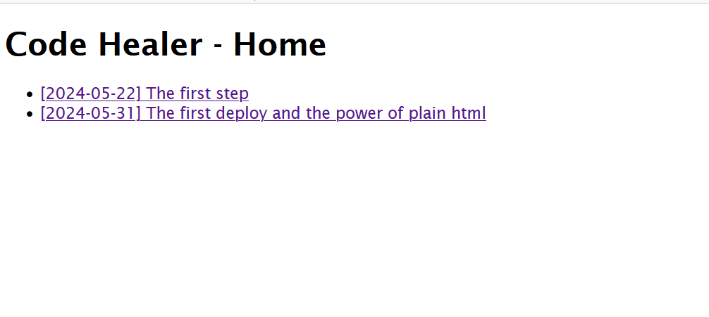

In this post I will record the issues that appears across de blog development, the idea is to have a real walkthrough of issues and needs that appeared over time.
The first post was commited in Index html page, because I wished to deploy and to see te results as soon as possible. However to deliver new posts was necessary to create a Home page to group posts and a mechanism to go back to home. I used simple html links `a` to solve this. Although there are many ways to implement navigation, including routes libraries, we can always remember that simple links can be very useful and enough to this situation. 
On large screens it was difficult to read because of the line length, so I set the maximum width to 960px. In future posts I intend to talk more about readability.